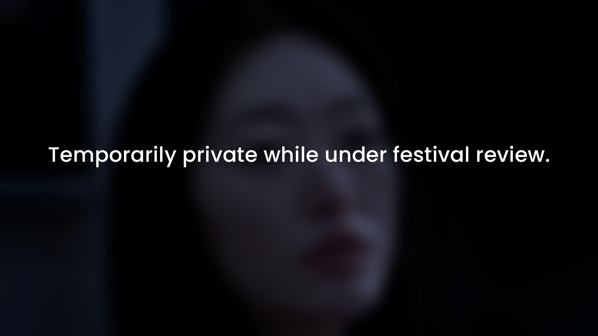
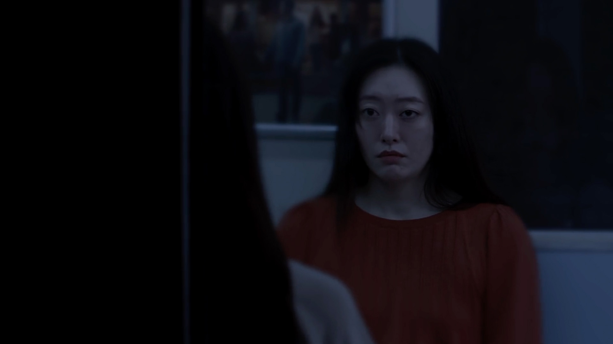
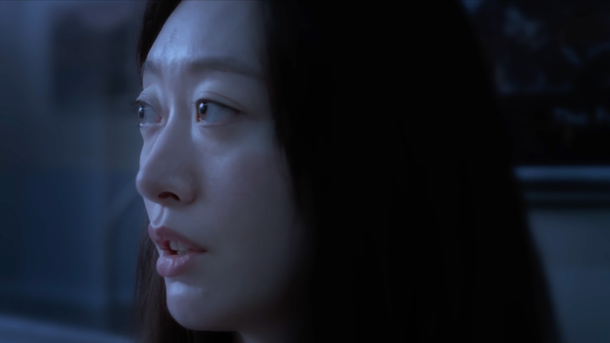
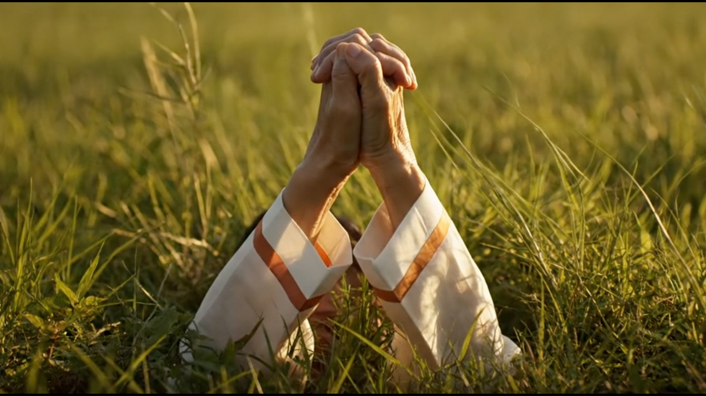

After delivering a eulogy at the funeral of her estranged mother, Jeongeum boards a subway home only to enter a surreal space where time bends and her mother appears once more. In this liminal journey between guilt and grief, can Jeongeum find the courage to forgive?
The story centers on Jeongeum, a young Korean woman quietly unraveling under the weight of intergenerational trauma. As she travels through a dark tunnel, the train's flickering lights become a metronome for memory. Opposite her sits her late mother, Heejin, whose age shifts between youth and death, presence and absence.
The subway becomes a purgatory-like corridor, cycling through scenes of guilt, denial, longing, and eventual spiritual reconciliation.



"Train up a child in the way he should go; even when he is old he will not depart from it."
Proverbs 22:6 — referenced twice in the film, once in earnest prayer, once in painful ironyStylistically, the film is shot like a lucid dream. Static compositions are interrupted by sudden movements—mirrored gestures, slow chases, repetition. The lights of the tunnel flash across Jeongeum's face like a dying projector.
Dialogue is sparse but potent. Much is communicated through eye contact, mirrored motion, and emotional resonance. The mother's voice, at times cruel and at other times tender, represents not only Heejin but the shadow of a culture that stigmatizes weakness and burdens daughters with silence.